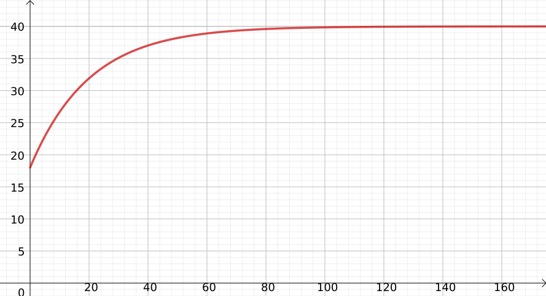
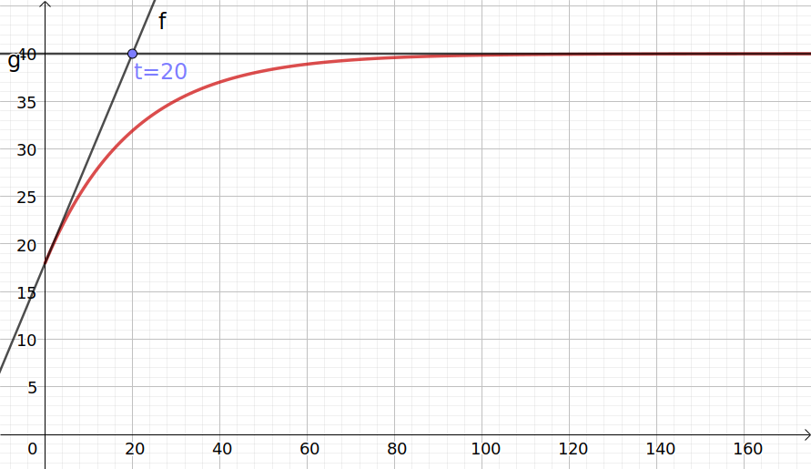
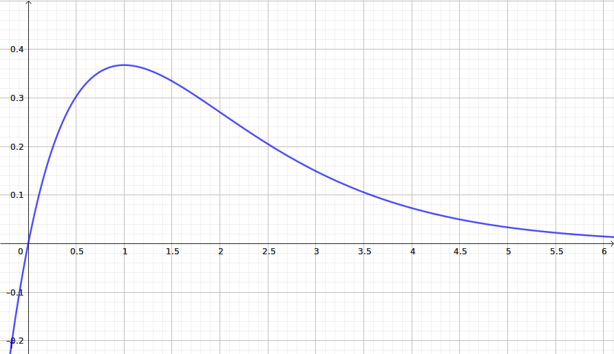

Dispositif de chauffe et de maintien de température
On étudie le dispositif de chauffe et de maintien en température d'un récipient.
On note \(y(t)\) la température du récipient, en degrés Celsius (°C) à l'instant t exprimé en
secondes. Condition initiale : À t=0, la température est \(y(0)=18\)°C.
Dans les conditions de l'expérience, le bilan énergétique se traduit par l'équation différentielle
suivante :
\[(E)~:~~y'(t)+0{,}05y(t)=2\]
Déterminer une solution particulière constante de l'équation différentielle \((E)\).
Recherchons une solution particulière constante. De fait, \(y'=0\), donc \(0{,}05y(t)=2\) donc
\(y=\dfrac{2}{0{,}05}=40\).
\((E_0)~:~~y'(t)+0{,}05y(t)=0\) est l'équation homogène associée à \((E_1)\).
Résoudre cette équation homogène et en déduire toutes les solutions de \((E)\).
\(y'(t)=-0{,}05y(t)\), donc les solutions de l'équation homogène sont \(x\mapsto
k\textrm{e}^{-0{,}05t}\) pour \(k\in\mathbb{R}\).
Par superposition, les solutions de \(E\) sont : \(x\mapsto 40 + k\textrm{e}^{-0{,}05t}\)
Démontrer que dans les conditions de l'expérience, la température est donnée par la fonction \(g\)
définie pour tout temps t positif par le relation :
\( g(t)=40-22\rm{e}^{-0{,}05t} \)
On recherche la valeur de \(k\) en utilisant la condition initiale :
\(18
= g(0)
= 40 + k\textrm{e}^{-0{,}05\times 0}
= 40 + k
\) donc \(k=18-40=-22\), d'où \(g(t)=40 -22\textrm{e}^{-0{,}05t}\).
Déterminer la température obtenue après un temps assez long, dite température «stationnaire», en
calculant \(\displaystyle\lim_{t\to+\infty} 40-22\rm{e}^{-0{,}05t}\)
\(\displaystyle\lim_{t\to+\infty}-0{,}05t=-\infty\) et \(\displaystyle\lim_{-\infty}
\textrm{exp} = 0^+\) donc par composition :
\(\displaystyle\lim_{t\to+\infty} 40-22\rm{e}^{-0{,}05t}=40-22\times 0^+ = 40^-\)
Calculer \(g'(t)\) et en déduire \(g'(0)\). La fonction \(g\) est-elle convexe, concave ? Justifier.
D'après (E) :
\(g'(t)
= 2-0{,}05 g(t)
= 2 - 0{,}05 \left(40-22\rm{e}^{-0{,}05t}\right)
= \cancel{2 - 2} + 1{,}1\rm{e}^{-0{,}05t}
\) donc \(g(0)=1{,}1\)
On calcule \(g''(t)=1{,}1\times (-0{,}05)\rm{e}^{-0{,}05t}=-0{,}055\rm{e}^{-0{,}05t}<0\) donc
\(g\) est concave.
On a tracé la courbe de \(g(t)\) dans le repère suivant :

Tracer, sur le graphique, la tangente en t=0 et l'asymptote à la courbe.
Écrire l'abscisse du point d'intersection de cette tangente et de cette asymptote, que l'on
appellera \(\tau\).

la tangente a pour équation \(y=1{,}1t+18\) et l'asymptote \(y=40\). De l'équation
\(1{,}1t+18=40\), on tire \(\tau = 20\).
En utilisant une intégrale que l'on écrira, calculer la température moyenne de t=0 secondes à t=100
secondes (arrondir au centième).
La valeur moyenne de \(g\) sur [0;100] est donnée par :
\(\dfrac{1}{100}\displaystyle \int_0^100\,g(t)\,\textrm{d}t}
=\dfrac{1}{100}\displaystyle\int_0^100\,40-22\rm{e}^{-0{,}05t}\,\textrm{d}t\)
=\dfrac{1}{100}\left[40t-22\dfrac{1}{-0{,}05}\rm{e}^{-0{,}05t}\right]_0^100
=\dfrac{1}{100}\left[40t+440\rm{e}^{-0{,}05t}\right]_0^100
=\dfrac{1}{100}\left(440\rm{e}^{-5}+4000-440\right)
=35{,}63^\circ
\)
Expliquer la valeur affichée après l'exécution du programme Python suivant :
from math import exp
def g(t):
return 40 - 22*exp(-0.05*t)
t = 0
while g(t) < 29:
t = t + 0.01
print(t)
Le programme détermine au centième de seconde près, l'instant t à partir duquel la température
dépasse 29°C.
Déterminer, au centième de seconde près, l'instant t à partir duquel la température
dépasse 29°C.
On peut utiliser le programme de la question précédente ou bien résoudre une inéquation en
utilisant ln. On trouve 13,86s.
Probabilités (7,5 points)
Mansour étudie la qualité de ses services au tennis. Il associe une double faute à la valeur
\(X=-1\),
un
service gagnant à la valeur \(X=1\) et les autres services à la valeur \(X=0\).
Une étude statistique lui a permis d'établir la loi de \(X\) ci-contre.
On note \(M_n\) la moyenne d'un échantillon de \(n\) variables aléatoires indépendantes
\(\left(X_1,\ldots,X_n\right)\)
de même loi que \(X\).
Écrire l'inégalité de concentration appliquée à \(M_n\).
Combien de services doit-il réaliser au minimum pour être sûr au seuil de 91% que la moyenne obtenue
d'un
échantillon \(\left(X_1,\ldots,X_n\right)\) de la variable aléatoire \(X\) soit strictement comprise
entre 0 et 0,30 ?
On utilise \(\delta = 0{,}15\). On a :
\(
0{,}91 \leqslant
\textrm{P}\left(0<M_n<0{,}30\right) =
\textrm{P}\left(\left|M_n-0{,}15\right| < 0{,}15 \right) =
1-\textrm{P}\left(\left|M_n-0{,}15\right|\geqslant 0{,}15 \right)
\)
ce qui équivaut à :
\(
\textrm{P}\left(\left|M_n-0{,}15\right|\geqslant\delta\right) \leqslant 1-0{,}91 = 0{,}09
\)
On recherche le plus petit entier \(n\) tel que \(\dfrac{0{,}2275}{0{,}15^2 n}\leqslant
0{,}09\), soit \(n\geqslant \dfrac{0{,}2275}{0{,}09\times0{,}15^2}\approx 112{,}3\), donc
\(n=113\)
On note \(Y\) la variable aléatoire, qui, sur un échantillon de 10 services indépendants, compte le
nombre de services gagnants.
Quel est le nom de la loi suivie par \(Y\) ? Préciser ses paramètres. Combien \(Y\) a-t-elle de
valeurs possibles ?
\(Y\) suit une loi binomiale de paramètres \(n=10\) et \(p=0{,}2\) ; en effet, elle compte le
nombres de succès (service gagnant, probabilité de chacun : 0,2) sur un échantillon de 10
services (indépendants).
\(Y\) a 11 valeurs possibles : de 0 (inclus) à 10 (inclus).
Calculer la probabilité de réaliser au moins un service gagnant parmi les 10 services réalisés
(arrondir au millième).
Cette probabilité est complémentaire de \(P(Y=0)\) donc vaut :
\(1-0{,}80^{10} \approx 0{,}893\).
Calculer la probabilité de réaliser exactement deux services gagnant parmi les 10 services réalisés
(arrondir au millième).
Cette probabilité est complémentaire de \(P(Y=2)=\textrm{BinomFdP/PD}(n=10, p=0.2, k=2) \approx
0{,}302\)
Que représente la valeur 2 pour la variable aléatoire \(Y\) ?
Il s'agit de l'espérance de \(Y\) : \(np=10\times 0{,}2=2\).
.
Intégration - aires (7,5 points)
\(f\) est la fonction définie sur [0;∞[ par \(f(x)=x\textrm{e}^{-x}\).
On note \(\mathcal{C}\) sa courbe représentative dans un repère ci-dessous.
On note \(D\) le domaine situé entre la courbe \(\mathcal{C}\) et
l'axe horizontal, sur l'intervalle [0;1]. Hachurer ou colorier le domaine \(D\) sur la figure :

À l'aide d'une intégration par parties, exprimer l'aire, en unités d'aire (u.a.), du domaine
\(D\). On arrondira au millième.
On dérive la partie \(x\) :
\(
\displaystyle\int_0^1\,x\textrm{e}^{-x}\,\textrm{d}x
=\left[-x\textrm{e}^{-x}\right]_0^1-\int_0^1\,-\textrm{e}^{-x}\,\textrm{d}x
=-\dfrac{1}{\textrm{e}}-\left[\textrm{e}^{-x}\right]_0^1
=-\dfrac{1}{\textrm{e}}-\dfrac{1}{\textrm{e}}+1
=1-\frac{2}{\textrm{e}}
\approx 0{,}264 u.a.
\)
Pour tout entier \(n\geqslant 1\), on définit sur [0;∞[ la fonction \(f_n\) par
\(f_n(x)=x^n\textrm{e}^{-x}\).
Justifier que pour \(0\leqslant x \leqslant 1\), on a \(0\leqslant f_n(x)\leqslant x^n\)
\(x\mapsto\textrm{e}^{-x}\) est une fonction décroissante et positive, donc on a pour
\(x\in\left[0;1\right]\) :
\(1=textrm{e}^{-0}\geqslant \textrm{e}^{-x} \geqslant 0 \) Il suffit de multiplier ce dernier
encadrement par \(x^n\geqslant 0 \).
On note \(I_n=\displaystyle\int_0^1\,x^n\textrm{e}^{-x}\,\textrm{d}x\) pour \(n\geqslant 1\).
Démontrer que pour tout entier \(n\geqslant 1\), on a \(0\leqslant I_n \leqslant \dfrac{1}{n+1}\).
Il suffit d'intégrer sur [0;1] l'inégalité précédente.
En déduire la limite de la suite \((I_n)_{n\in\mathbb{N}^*}\).
Comme \(\displaystyle\lim_{n\to+\infty}\dfrac{1}{n+1}=0\), par encadrement,
\(\displaystyle\lim_{n\to+\infty}I_n=0\).
En utilisant une intégration par parties, démontrer que
\(\textrm{e}=\dfrac{1}{I_{n+1}+(n+1)I_n}\)
En dérivant la partie \(x^n\) dans \(I_{n+1}\), on obtient \(I_{n+1}=\textrm{e}^{-1}+(n+1)I_n\).